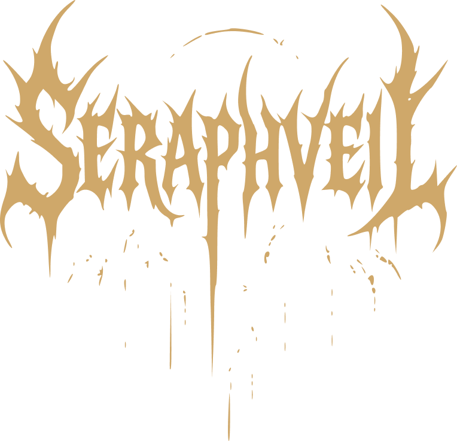

Sealed beneath the Drowned Cathedral and signed in 1919, Seraphveil render hymns for a congregation that never disbanded. Five voices, one of them no longer breathing, braided over orchestral dread and funereal choir. Every record is a rite — play it through and something in the room agrees to listen back.